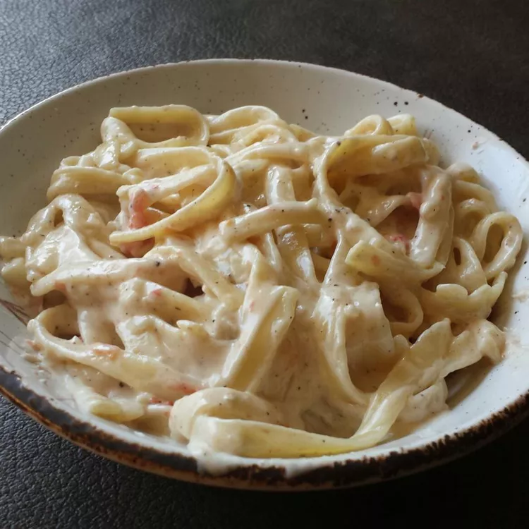

Habanero Pepper Cream Pasta

Description
If you're looking for an entrée full of piquant flavor, try this quick and
easy pasta dish topped with a spicy cream sauce made with habanero
peppers, garlic, and shallots. You can add sautéed chicken or shrimp if
desired.
Ingredients
- 1 (8 ounce) package cavatappi pasta
- 1 teaspoon butter
- 1 teaspoon olive oil
- 1 medium shallot, chopped
- 2 cloves garlic, diced
- 1 dried habanero pepper, chopped
- 2 cups heavy cream
- 1 large tomato, diced
- 2 tablespoons all-purpose flour
- 1 teaspoon black pepper
- 1 cup grated Parmesan cheese
-
Bring a large pot of lightly salted water to a boil. Add pasta and cook
until tender yet firm to the bite, 8 to 10 minutes.
-
While the pasta is cooking, melt butter with olive oil in a skillet over
medium heat. Add shallot, garlic, and habanero pepper; cook and stir
until lightly browned and fragrant, about 2 minutes. Remove from the
heat.
-
Bring cream to a simmer in a saucepan over medium heat. Stir in shallot
mixture and tomato, then mix in flour and black pepper. Simmer until
thickened, 5 to 8 minutes. Stir in Parmesan cheese. Remove from the heat
and let sit until pasta is finished.
- Drain pasta. Serve pasta on plates and ladle sauce over top.